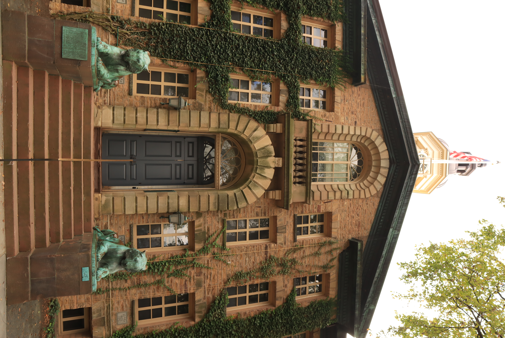
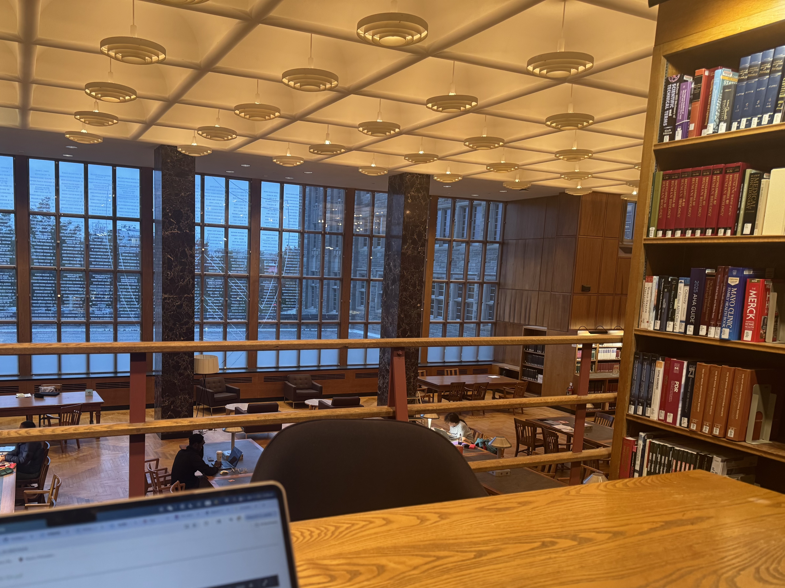

During fall break, I took a small trip to Princeton. The air was clear and a little cold, and I had no plan for the day. I sat in a café near the train station and opened the chat window, half out of curiosity, half out of boredom. I typed a simple request: give me four inspirations for how to explore this small town. The AI replied instantly, as if it had been waiting for the question. Its suggestions were ordinary yet oddly specific. I decided to follow them all, one by one, and see which moment would stay with me the longest.
Conversation
I use OpenAI/ChatGPT-5 in this small experiment.
Prompt:
I have 40 minutes on the Princeton campus. From the perspectives of a security guard, a librarian, an undergraduate student and a tourist, please give me one of the most worthwhile things to do and explain why (60 words or less for each).
Response:
Security Guard: Take a peaceful walk around Nassau Hall. It’s quiet, symbolic, and central to campus life — a place where guards often observe both history and calm order blending seamlessly.
Librarian: Visit Firestone Library’s reading room. Its architecture and atmosphere capture Princeton’s scholarly heart — vast knowledge, quiet concentration, and timeless dedication to learning.
Undergraduate Student: Sit by Cannon Green. It’s where friends meet, traditions unfold, and the spirit of campus community thrives between classes.
Tourist: Explore the Princeton University Art Museum (or its outdoor sculpture garden). It’s free, world-class, and offers an accessible glimpse into culture, creativity, and Princeton’s intellectual charm.
Trying It Out
Security Guard
Answer: Take a peaceful walk around Nassau Hall. It’s quiet, symbolic, and central to campus life — a place where guards often observe both history and calm order blending seamlessly.
In Reality: My first stop was Nassau Hall. I walked slowly along the old stone walls, leaves crunching under my shoes. It‚Äôs fall now, and the trees have turned a deep golden hue. Everything felt calm, almost ceremonial. Emerald ivy clung to the walls as if it had been growing there for centuries, maybe that‚Äôs why we call princeton as one of ivy leagueüòâ? The bronze tigers lay quietly by the entrance, and the American flag waved gently above the doorway. There was a sense of quiet, timeless strength in the air.

Librarian
Answer: Visit Firestone Library’s reading room. Its architecture and atmosphere capture Princeton’s scholarly heart — vast knowledge, quiet concentration, and timeless dedication to learning.
In Reality: Firestone smelled like paper and ink. Rows of lamps glowed, each lighting someone’s little universe of notes and coffee cups. I sat for an hour without touching my phone, and it felt like time paused politely for me. It seems has magic to let person focus.

Undergraduate Student
Answer: Sit by Cannon Green. It’s where friends meet, traditions unfold, and the spirit of campus community thrives between classes.
In Reality: Well, this is a bit awkward: Cannon Green is just behind Nassau Hall, so I had to loop back. It’s interesting that an LLM didn’t point that out; it really only does what we ask it to. At Cannon Green, a gentle breeze drifted by, and sunlight filtered softly through the gaps between the leaves. A few students were eating sandwiches, some half-talking, half-dozing in the warmth. I didn’t know anyone, but I felt completely at ease, immersed and relaxed.

Tourist
Prompt: Explore the Princeton University Art Museum (or its outdoor sculpture garden). It’s free, world-class, and offers an accessible glimpse into culture, creativity, and Princeton’s intellectual charm.
In Reality: This tip didn’t even work for me: the museum’s already closed! I guess this suggestion must’ve come from the LLM’s training data and wasn’t updated in time, so even if I added “now” in the prompt, it couldn’t reflect the current situation. Still, the scenery around the museum was beautiful. Maybe that’s a reminder that following an LLM’s advice doesn’t always lead to practical results? But life, after all, is about finding unexpected joys along the way.

Closing Reflection
The LLM guided my steps with reason, yet beauty waited in the pauses between its words. Princeton’s stones, the drifting leaves, the warmth of light, none were in its plan. Perhaps truth is not in perfect guidance, but in the quiet surprise of being slightly lost. And that’s might be the reason why we are beteer than llms: because we don’t just follow instructions, we feel.